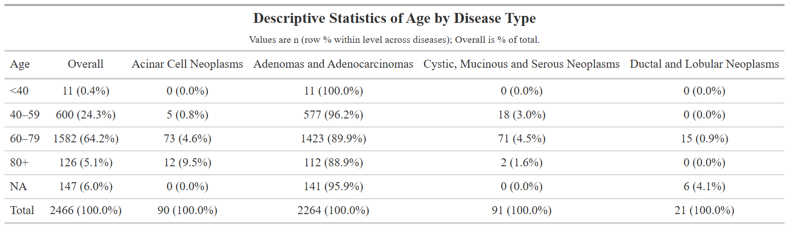
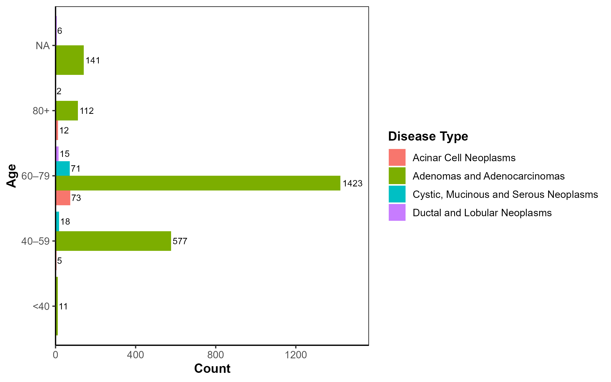
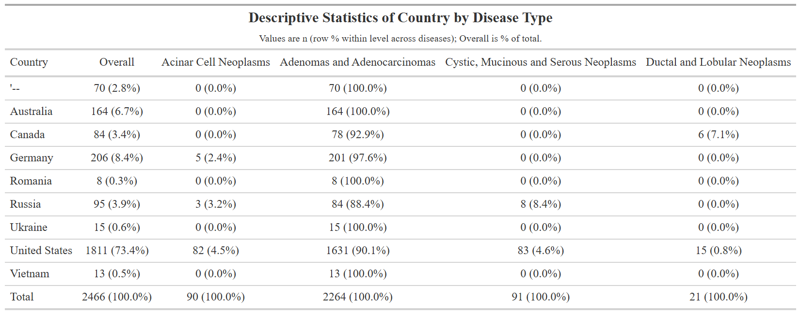
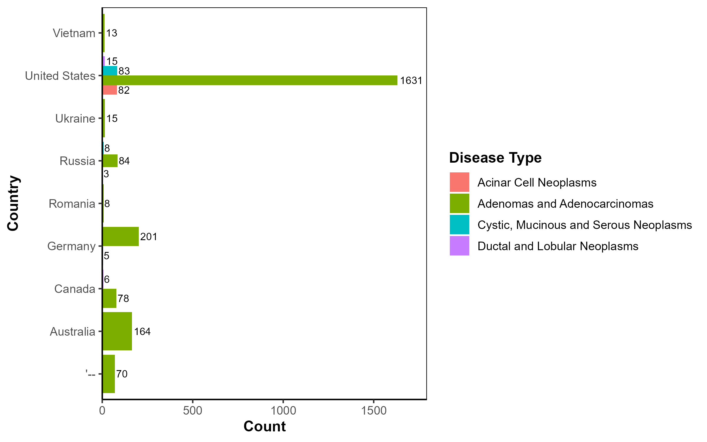
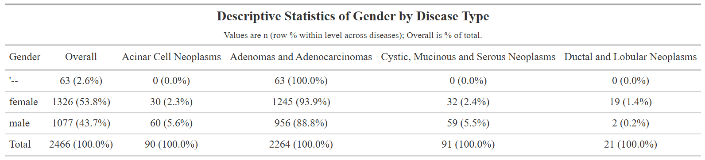
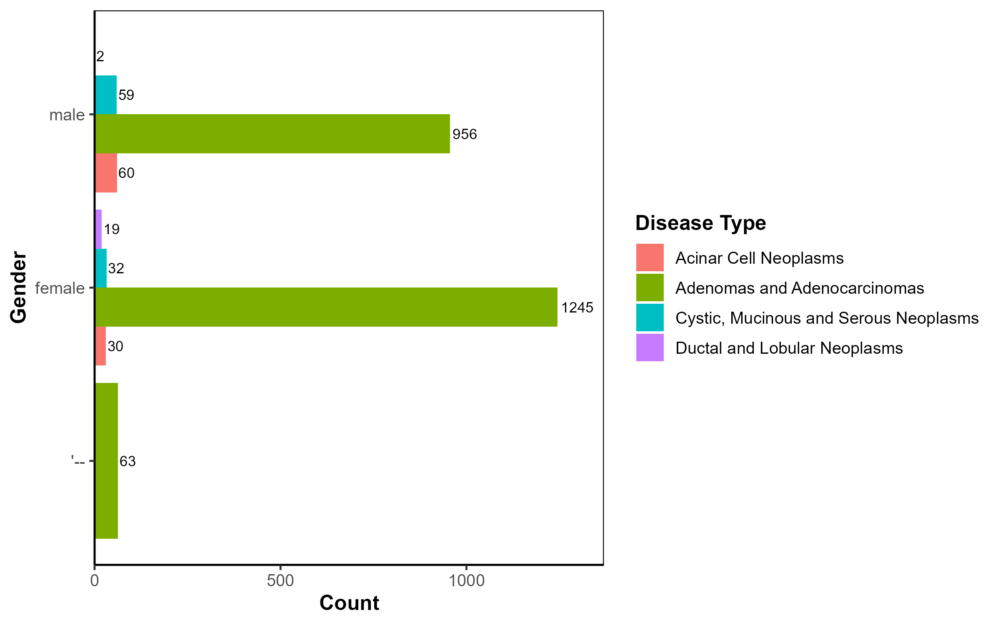
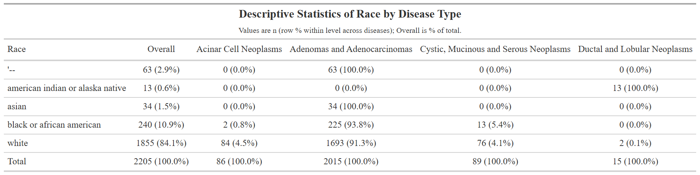
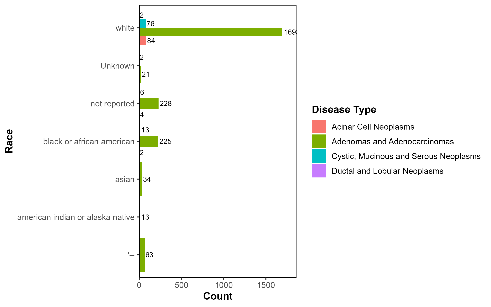
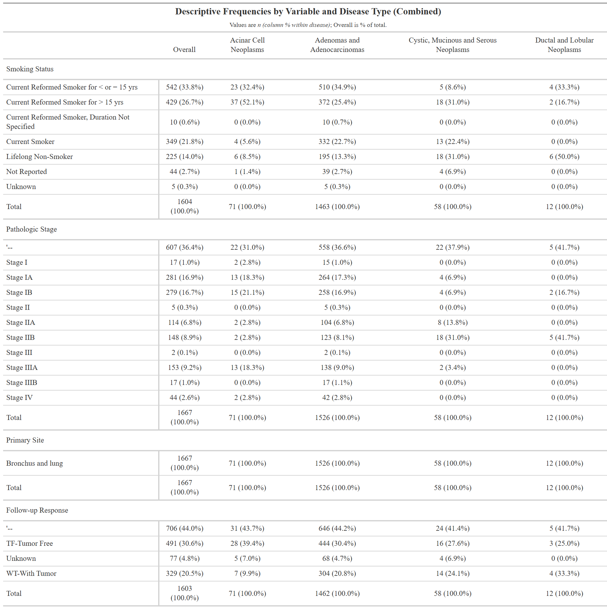

TCGA-LUAD Project
Demographic Analysis by Disease Type








Disease Type by Smokign Status, Pathologic Stage, and Follow-Up Status of Cancer

Code for Tables and Figures created by RStudio are given below for Reproducibility
library(tidyverse)
library(janitor)
library(forcats)
library(scales)
library(stringr)
library(gt)
read_tsv_clean <- function(path) {
readr::read_tsv(path, show_col_types = FALSE) %>%
janitor::remove_empty(c("rows","cols"))
}
clinical <- read_tsv_clean("clinical.tsv")
clinical$cases.disease_type <- factor(clinical$cases.disease_type)
clinical$demographic.country_of_residence_at_enrollment <- factor(clinical$demographic.country_of_residence_at_enrollment)
clinical$demographic.race <- factor(clinical$demographic.race)
clinical$demographic.gender <- factor(clinical$demographic.gender)
clinical$demographic.vital_status <- factor(clinical$demographic.vital_status)
.col_map <- list(
Gender = "demographic.gender",
Race = "demographic.race",
Country = "demographic.country_of_residence_at_enrollment",
Vital = "demographic.vital_status",
Age = "demographic.age_at_index"
)
build_table_df <- function(var_name, clinical) {
stopifnot(var_name %in% names(.col_map))
src <- .col_map[[var_name]]
demo <- clinical %>%
transmute(
Disease = factor(cases.disease_type),
value_raw = .data[[src]]
)
if (var_name == "Age") {
demo <- demo %>%
mutate(
age_num = suppressWarnings(as.numeric(value_raw)),
value = cut(
age_num,
breaks = c(-Inf, 40, 60, 80, Inf),
labels = c("<40","40–59","60–79","80+"),
right = FALSE
)
)
} else {
demo <- demo %>% mutate(value = value_raw)
}
if (var_name == "Race") {
value_chr <- tolower(trimws(as.character(demo$value)))
bad <- is.na(value_chr) |
grepl("^(unknown|not[ _-]?reported|not[ _-]?specified|n/?a|na)$", value_chr)
demo <- demo[!bad, , drop = FALSE]
}
demo %>%
mutate(Level = fct_drop(factor(as.character(value)))) %>%
select(Disease, Level)
}
make_apa_freq_table <- function(var_name, clinical,
percent_type = c("row","column"),
digits = 1) {
percent_type <- match.arg(percent_type)
demo <- build_table_df(var_name, clinical)
validate <- function(cond, msg) if (!cond) stop(msg, call. = FALSE)
validate(nrow(demo) > 0, "No data available for the selected demographic after cleaning.")
counts <- demo %>%
count(Level, Disease, name = "N") %>%
tidyr::complete(Level, Disease, fill = list(N = 0))
if (percent_type == "column") {
counts <- counts %>%
group_by(Disease) %>%
mutate(sumN = sum(N)) %>%
mutate(Pct = ifelse(sumN > 0, N / sumN, 0)) %>%
ungroup() %>%
select(-sumN)
subtitle_text <- "Values are n (column % within disease); Overall is % of total."
} else { # row %
counts <- counts %>%
group_by(Level) %>%
mutate(sumN = sum(N)) %>%
mutate(Pct = ifelse(sumN > 0, N / sumN, 0)) %>%
ungroup() %>%
select(-sumN)
subtitle_text <- "Values are n (row % within level across diseases); Overall is % of total."
}
by_dis <- counts %>%
mutate(Label = sprintf(paste0("%d (%.", digits, "f%%)"), N, 100 * Pct)) %>%
select(Level, Disease, Label) %>%
pivot_wider(names_from = Disease, values_from = Label) %>%
arrange(Level)
overall <- demo %>%
count(Level, name = "Overall_N") %>%
mutate(
Overall_Pct = Overall_N / sum(Overall_N),
Overall = sprintf(paste0("%d (%.", digits, "f%%)"), Overall_N, 100 * Overall_Pct)
) %>%
select(Level, Overall)
apa_df <- overall %>% left_join(by_dis, by = "Level")
totals_disease <- demo %>%
count(Disease, name = "N") %>%
mutate(Label = sprintf("%d (100.0%%)", N)) %>%
select(Disease, Label) %>%
pivot_wider(names_from = Disease, values_from = Label)
total_row <- tibble(
Level = "Total",
Overall = sprintf("%d (100.0%%)", nrow(demo))
) %>% bind_cols(totals_disease)
apa_df <- bind_rows(apa_df, total_row)
names(apa_df)[names(apa_df) == "Level"] <- var_name
gt_tbl <- apa_df %>%
gt() %>%
tab_header(
title = md(paste0("**Descriptive Statistics of ", var_name, " by Disease Type**")),
subtitle = md(subtitle_text)
) %>%
cols_align(align = "left", columns = var_name) %>%
cols_align(align = "center", columns = setdiff(colnames(apa_df), var_name)) %>%
tab_options(
table.font.names = "sans",
table.font.size = px(12),
data_row.padding = px(4)
)
list(data = apa_df, gt = gt_tbl)
}
# Race (row %)
res_race <- make_apa_freq_table("Race", clinical, percent_type = "row")
print(res_race$data)
gtsave(res_race$gt, "apa_table_race.png")
# Age (row %)
res_age <- make_apa_freq_table("Age", clinical, percent_type = "row")
print(res_age$data)
gtsave(res_age$gt, "apa_table_age.png")
# Country (row %)
res_ct <- make_apa_freq_table("Country", clinical, percent_type = "row")
print(res_ct$data)
gtsave(res_ct$gt, "apa_table_country.png")
# Gender (row %)
res_gen <- make_apa_freq_table("Gender", clinical, percent_type = "row")
print(res_gen$data)
gtsave(res_gen$gt, "apa_table_gender.png")
# Vital (row %)
res_vt <- make_apa_freq_table("Vital", clinical, percent_type = "row")
print(res_vt$data)
gtsave(res_vt$gt, "apa_table_vital.png")
library(shiny) library(tidyverse) library(janitor) library(forcats) library(scales) library(ggplot2) library(stringr)
read_tsv_clean \<- function(path) { readr::read_tsv(path, show_col_types = FALSE) %\>% janitor::remove_empty(c("rows","cols")) }
clinical \<- read_tsv_clean("clinical.tsv")
clinical$cases.disease_type <- factor(clinical$cases.disease_type) clinical$demographic.country_of_residence_at_enrollment <- factor(clinical$demographic.country_of_residence_at_enrollment) clinical$demographic.race <- factor(clinical$demographic.race) clinical$demographic.gender <- factor(clinical$demographic.gender) clinical$demographic.vital_status <- factor(clinical$demographic.vital_status)
theme_apa \<- function(base_size = 12, base_family = "sans") { theme_classic(base_size = base_size, base_family = base_family) + theme( panel.border = element_rect(color = "black", fill = NA, linewidth = 0.5), axis.title = element_text(face = "bold"), legend.position = "right", legend.title = element_text(face = "bold"), axis.text.x = element_text(angle = 0, hjust = 0.5) ) }
build_plot_df \<- function(var_name) { col_map \<- list( Gender = "demographic.gender", Race = "demographic.race", Country = "demographic.country_of_residence_at_enrollment", Vital = "demographic.vital_status", Age = "demographic.age_at_index" \# will be grouped below )
stopifnot(var_name %in% names(col_map)) source_col \<- col_map\[\[var_name\]\]
df \<- clinical %\>% transmute( Disease = factor(cases.disease_type), value_raw = .data\[\[source_col\]\] )
\# Age group if (var_name == "Age") { df \<- df %\>% mutate( age_num = suppressWarnings(as.numeric(value_raw)), value = cut( age_num, breaks = c(-Inf, 40, 60, 80, Inf), labels = c("\<40","40–59","60–79","80+"), right = FALSE ) ) } else { df \<- df %\>% mutate(value = value_raw) }
df %\>% mutate(value = fct_drop(as.factor(value))) %\>% transmute(!!var_name := value, Disease) }
# Horizontal bar chart (counts) with labels
plot_bar_counts \<- function(df, var_name) { ggplot(df, aes(x = .data\[\[var_name\]\], fill = Disease)) + geom_bar(position = position_dodge(width = 0.9)) + geom_text( stat = "count", aes(label = ..count..), position = position_dodge(width = 0.9), hjust = -0.1, size = 3 ) + coord_flip() + scale_y_continuous(expand = expansion(mult = c(0, 0.1))) + labs(x = var_name, y = "Count", fill = "Disease Type") + theme_apa() }
# Shiny UI
ui \<- fluidPage( titlePanel("Demographics by Disease Type"), sidebarLayout( sidebarPanel( selectInput( "demo_var", "Select demographic:", choices = c("Gender","Race","Country","Vital","Age"), selected = "Gender" ), downloadButton("download_png", "Download Plot (PNG)") ), mainPanel( plotOutput("demo_plot", height = "520px") ) ) )
# Shiny Server
server \<- function(input, output, session) {
current_plot \<- reactive({ df \<- build_plot_df(input$demo_var)
validate(need(nrow(df) > 0, "No data available for the selected demographic after cleaning."))
plot_bar_counts(df, input$demo_var) })
output\$demo_plot \<- renderPlot({ current_plot() })
output$download_png <- downloadHandler(
filename = function() {
paste0("disease_by_", input$demo_var, ".png") }, content = function(file) { plt \<- current_plot() ggplot2::ggsave( filename = file, plot = plt, width = 8, height = 5, dpi = 300, units = "in", device = "png" ) } ) }
shinyApp(ui, server)library(tidyverse)
library(janitor)
library(forcats)
library(scales)
library(stringr)
library(gt)
read_tsv_clean <- function(path) {
readr::read_tsv(path, show_col_types = FALSE) %>%
janitor::remove_empty(c("rows","cols"))
}
clinical <- read_tsv_clean("clinical.tsv")
exposure <- read_tsv_clean("exposure.tsv")
follow_up <- read_tsv_clean("follow_up.tsv")
merged_view <- {
clinical_slim <- clinical %>%
select(`cases.case_id`, `cases.disease_type`, `cases.primary_site`, `diagnoses.ajcc_pathologic_stage`) %>%
distinct()
exposure_slim <- exposure %>%
select(`cases.case_id`, `exposures.tobacco_smoking_status`) %>%
distinct()
followup_slim <- follow_up %>%
select(`cases.case_id`, `follow_ups.disease_response`) %>%
distinct()
clinical_slim %>%
left_join(exposure_slim, by = "cases.case_id") %>%
left_join(followup_slim, by = "cases.case_id")
}
build_var_df <- function(var_name) {
var_map <- list(
"Smoking Status" = "exposures.tobacco_smoking_status",
"Pathologic Stage" = "diagnoses.ajcc_pathologic_stage",
"Primary Site" = "cases.primary_site",
"Follow-up Response" = "follow_ups.disease_response"
)
stopifnot(var_name %in% names(var_map))
src <- var_map[[var_name]]
merged_view %>%
transmute(
Disease = factor(`cases.disease_type`),
value = .data[[src]]
) %>%
filter(!is.na(Disease), !is.na(value)) %>% # drop missing
filter(trimws(as.character(value)) != "", as.character(value) != "...") %>% # drop empty/"..."
mutate(value = fct_drop(as.factor(value))) %>%
transmute(!!var_name := value, Disease)
}
# APA-style frequency table (n and % within Disease; Overall %)
make_apa_freq_table <- function(var_name) {
df <- build_var_df(var_name)
if (nrow(df) == 0) stop("No data available after cleaning.", call. = FALSE)
# Per-disease counts and column % (within each Disease)
by_dis <- df %>%
count(Level = !!sym(var_name), Disease, name = "N") %>%
group_by(Disease) %>%
mutate(Pct = N / sum(N)) %>%
ungroup() %>%
mutate(Label = sprintf("%d (%.1f%%)", N, 100 * Pct)) %>%
select(Level, Disease, Label) %>%
pivot_wider(names_from = Disease, values_from = Label) %>%
arrange(Level)
# Overall counts and % (of total for this variable)
overall <- df %>%
count(Level = !!sym(var_name), name = "Overall_N") %>%
mutate(Overall_Pct = Overall_N / sum(Overall_N),
Overall = sprintf("%d (%.1f%%)", Overall_N, 100 * Overall_Pct)) %>%
select(Level, Overall)
apa_df <- overall %>%
left_join(by_dis, by = "Level") %>%
arrange(Level)
# Totals row
totals_disease <- df %>%
count(Disease, name = "N") %>%
mutate(Label = sprintf("%d (100.0%%)", N)) %>%
select(Disease, Label) %>%
pivot_wider(names_from = Disease, values_from = Label)
total_row <- tibble(
Level = "Total",
Overall = sprintf("%d (100.0%%)", nrow(df))
) %>% bind_cols(totals_disease)
apa_df <- bind_rows(apa_df, total_row)
names(apa_df)[names(apa_df) == "Level"] <- var_name
gt_tbl <- apa_df %>%
gt() %>%
tab_header(
title = md(paste0("**Descriptive Frequencies of ", var_name, " by Disease Type**")),
subtitle = md("Values are *n (column % within disease)*; Overall is % of total.")
) %>%
cols_align(align = "left", columns = var_name) %>%
cols_align(align = "center", columns = setdiff(colnames(apa_df), var_name)) %>%
tab_options(
table.font.names = "sans",
table.font.size = px(12),
data_row.padding = px(4)
)
list(data = apa_df, gt = gt_tbl)
}
res2 <- make_apa_freq_table("Smoking Status"); res2$gt
gtsave(res2$gt, "smoke_status.html")
res3 <- make_apa_freq_table("Pathologic Stage"); res3$gt
gtsave(res3$gt, "pathologic_stage.html")
res4 <- make_apa_freq_table("Primary Site"); res4$gt
gtsave(res4$gt, "exposure_site.html")
res5 <- make_apa_freq_table("Follow-up Response"); res5$gt
gtsave(res5$gt, "follow_up_response.html")
.build_block <- function(var_name) {
df <- build_var_df(var_name)
if (nrow(df) == 0) return(NULL)
# Per-disease counts and column % (within Disease)
by_dis <- df %>%
count(Level = !!sym(var_name), Disease, name = "N") %>%
group_by(Disease) %>%
mutate(Pct = N / sum(N)) %>%
ungroup() %>%
mutate(Label = sprintf("%d (%.1f%%)", N, 100 * Pct)) %>%
select(Level, Disease, Label) %>%
tidyr::pivot_wider(names_from = Disease, values_from = Label)
# Overall counts and % of total
overall <- df %>%
count(Level = !!sym(var_name), name = "Overall_N") %>%
mutate(Overall_Pct = Overall_N / sum(Overall_N),
Overall = sprintf("%d (%.1f%%)", Overall_N, 100 * Overall_Pct)) %>%
select(Level, Overall)
# Merge & sort
block <- overall %>%
left_join(by_dis, by = "Level") %>%
arrange(Level)
# Totals row for this variable block
totals_disease <- df %>%
count(Disease, name = "N") %>%
mutate(Label = sprintf("%d (100.0%%)", N)) %>%
select(Disease, Label) %>%
tidyr::pivot_wider(names_from = Disease, values_from = Label)
total_row <- tibble(
Level = "Total",
Overall = sprintf("%d (100.0%%)", nrow(df))
) %>% bind_cols(totals_disease)
block <- bind_rows(block, total_row)
# Add the Variable label as a grouping column
block %>% mutate(Variable = var_name, .before = 1)
}
# Build the combined table across all variables
make_apa_freq_table_combined <- function(vars = c(
"Smoking Status", "Pathologic Stage", "Primary Site", "Follow-up Response"
)) {
blocks <- purrr::map(vars, .build_block)
blocks <- blocks[!purrr::map_lgl(blocks, is.null)]
if (length(blocks) == 0) stop("No data available after cleaning.", call. = FALSE)
combined <- dplyr::bind_rows(blocks)
fixed_cols <- c("Variable", "Level", "Overall")
disease_cols <- setdiff(names(combined), fixed_cols)
all_cols <- c(fixed_cols, disease_cols)
combined <- combined[, all_cols]
combined[disease_cols] <- lapply(combined[disease_cols], function(x) ifelse(is.na(x), "0 (0.0%)", x))
# gt table grouped by Variable
gt_tbl <- combined %>%
gt(rowname_col = "Level", groupname_col = "Variable") %>%
tab_header(
title = md("**Descriptive Frequencies by Variable and Disease Type (Combined)**"),
subtitle = md("Values are *n (column % within disease)*; Overall is % of total.")
) %>%
cols_align(align = "left", columns = c("Level")) %>%
cols_align(align = "center", columns = setdiff(colnames(combined), c("Variable", "Level"))) %>%
tab_options(
table.font.names = "sans",
table.font.size = px(12),
data_row.padding = px(4)
)
list(data = combined, gt = gt_tbl)
}
combined_res <- make_apa_freq_table_combined()
combined_res$gt
gtsave(combined_res$gt, "exposure_site_status.png")
readr::write_csv(combined_res$data, "exposure_site_status.csv")
criteria_df <- merged_view %>%
transmute(
Disease = `cases.disease_type`,
SmokingStatus = `exposures.tobacco_smoking_status`,
PathologicStage = `diagnoses.ajcc_pathologic_stage`,
PrimarySite = `cases.primary_site`,
FollowupResp = `follow_ups.disease_response`
) %>%
mutate(across(everything(), ~na_if(., ""))) %>%
mutate(across(everything(), ~na_if(., "...")))
criteria_table <- criteria_df %>%
tidyr::drop_na() %>% # keep only rows with all five fields present
count(Disease, SmokingStatus, PathologicStage, PrimarySite, FollowupResp, name = "n") %>%
arrange(desc(n))
criteria_table %>% slice_max(n, n = 20) %>% gt()
readr::write_csv(criteria_table, "criteria_table_all_present.csv")